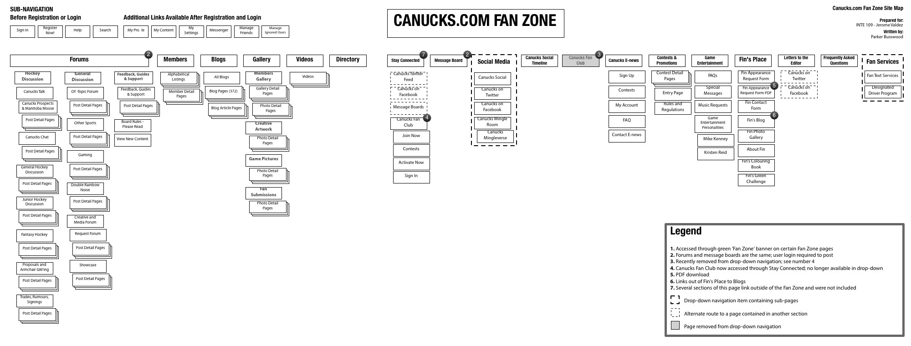
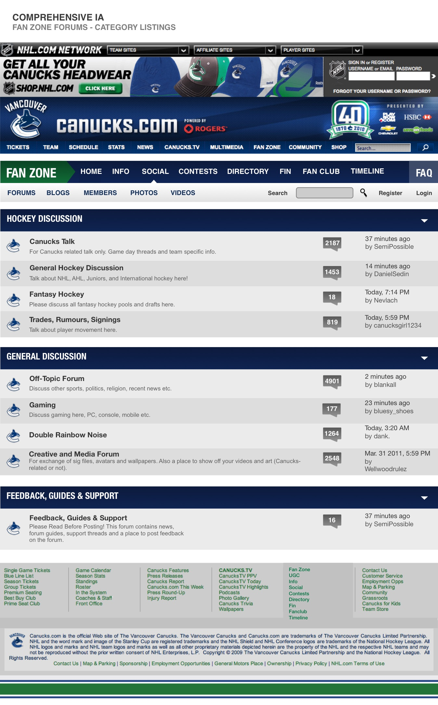

Vancouver Canucks
UX review for one of Canada's top sports teams.
As part of my Information Architecture and Usability Testing courses at Capilano University, I performed a full UX review of part of the Vancouver Canucks site.
I worked in collaboration with a team of classmates to complete a content audit, then designed, monitored, and reported on a series of usability testing sessions in order to gather valuable feedback on the site. We used this data to develop site maps and wireframes outlining recommended UX improvements to the Fan Zone and Kids Zone sections of the Canucks site.
The insights and recommendations that resulted were delivered to the Canucks, who passed along many of my team's suggested improvements to the NHL.
The Results
Take a look at the final product.
 More Projects
Check out what else I've been working on.


@ParkerBusswood: Love the idea of @startupvisaca. Lower barrier to entry, bring best #tech #startups to #Vancouver, and invest in their success. /cc @bwertz